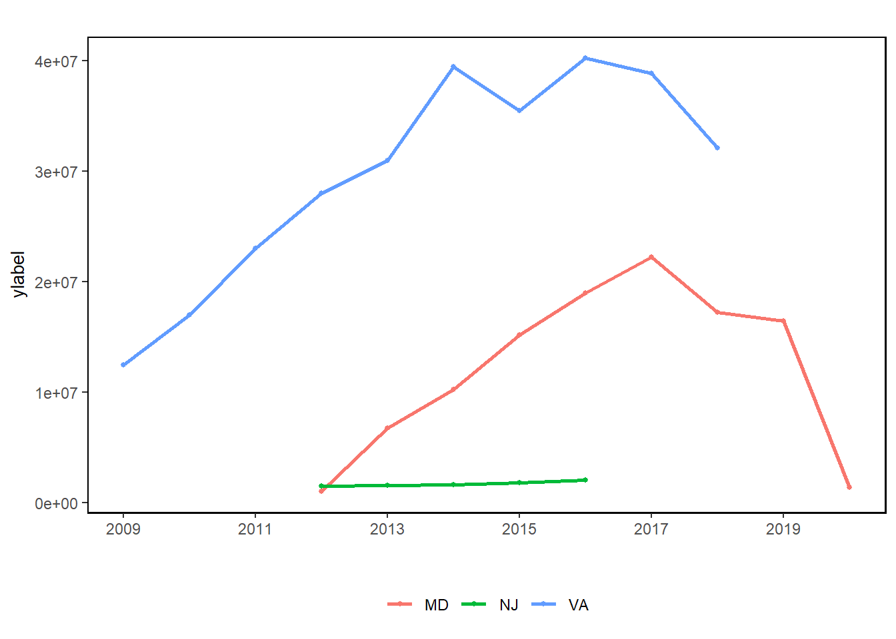
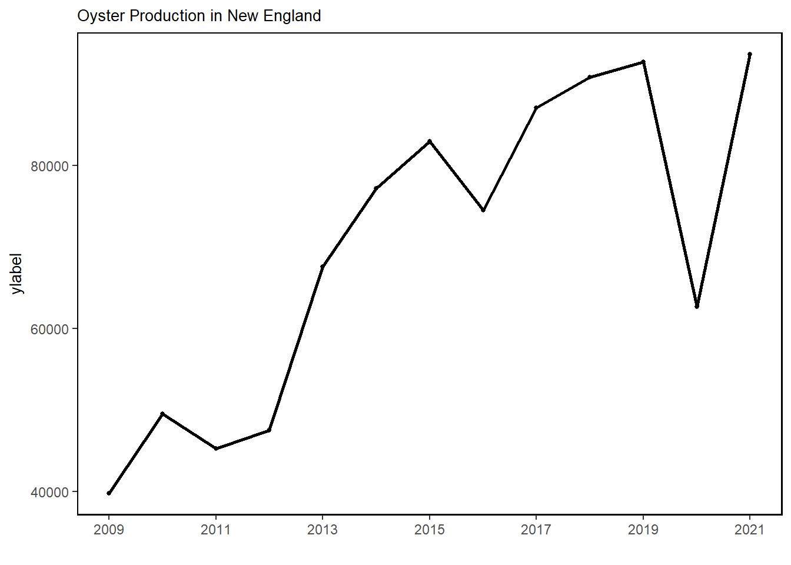

8 Aquaculture Production
Last updated: April 27, 2026
Description: Oyster production: number of oysters harvested from aquaculture.
Indicator family:
Contributor(s): Christopher Schillaci, Maine DMR, NH DES, MA DMF, RI CRMC, MD DNR
Affiliations: NOAA
8.1 Introduction to Indicator
Aquaculture can produce seafood as well as other products. Here we summarize available data on aquaculture production from the Northeast US.
8.2 Key Results and Visualizations
Overall, oyster production has generally increased and production per area has also improved. Aquaculture reporting is state specific, which can make it difficult to collate in a meaningful way. However, reporting coverage is improving year to year as aquaculture increases across the coast. The data included here only include oyster numbers at this time. Data after 2017 have decreased but, due to a lack of data from recent years, it is unclear if this has continued.
Mid-Atlantic

New England

8.3 Indicator statistics
Spatial scale: Mid Atlantic and New England
Temporal scale: Annual
Synthesis Theme:
8.4 Implications
Aquaculture production contributes to overall seafood production in the Northeast US. This indicator provides only a portion of aquaculture production in the region, but increases in this portion are apparent across the whole time series. Recent decreases (since 2017) may indicate a downward change in this aquaculture portion; however, there is not enough data from years following 2017 to indicate any significant decreasing trends.
8.5 Get the data
Point of contact: Chris Schillaci <christopher.schillaci@noaa.gov>
ecodata name: ecodata::aquaculture
Variable definitions
Pieces: number of oysters produced (all regions) Shellfish lease Acres: area used for shellfish production (New England states only), acres Production/Acre: Pieces divided by Shellfish lease acres (New England states only)
Indicator Category:
8.7 Accessibility and Constraints
No response
tech-doc link https://noaa-edab.github.io/tech-doc/aquaculture.html